|
| Kunst und Kultur in Budapest |
| |
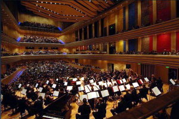 |
| |
|
Wer
den gewaltigen
kulturellen Brückenschlag zwischen
Ungarns kulturgeschichtlichem Erbe und seinen modernen Kunstangeboten,
die zu
den besten Europas zählen erfahren möchte, begibt
sich am besten in Budapests
neuem kulturellen Hot Spot, dem
,
der sich direkt benachbart mit dem neuen Nationaltheater am
östlichen Donauufer befindet. Das neue Kulturzentrum am Fusse
der Donaubrücke Rákóczi ist schnell zu
erreichen
aus dem Stadtzentrum mit der Strassenbahnlinie 2, die entlang
der östlichen Donauufer fährt. Die
Haltestelle heisst: "Millennáriumi Kulturális
Központ" - südwärts die vorletzte
Haltestelle. |
|
|
| 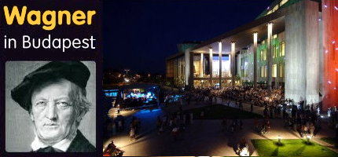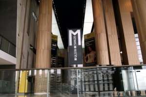 |
| |
Der
bis ins letzte Detail durchgestylte Kunsttempel besticht nicht nur
durch seine
beeindruckende Architektur, sondern auch durch die in ihm frei
werdenden Klangvolumina.
Der Palast
der
Künste sollte etwas ganz besonderes werden,
das war das Credo der Bauherren. Ebenso seine multikulturelle Nutzung,
die von
klassischen Konzerten bis zum Jazz und vom Ballett bis zur modernen
Tanzproduktion reicht.
Der
Gebäudekomplex beherbergt
auch das .
|
|
 |
Wer es
klassisch-traditionell mag, der ist in der
richtig.
Das
altehrwürdige Haus erfreut die Opernliebhabern aus aller Welt
mit
hervorragenden Inszenierungen.
|
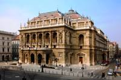
|
|
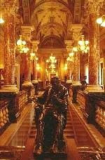 |
Der berühmte
Kunstmaler Bertalan
Székely
(*1835 - †1910) stammte aus Klausenburg (heute Cluj in
Rumänien).
Er wurde
berühmt durch die Gemälde der "Zrinyer
Schlacht", das
Altarbild "Golgotha", den Genrebilder "Sturm" und "Das
Gedächtnis", den
Aktbildern "Die Quelle" und "Leda", und den Fresken im Opernhaus
von Budapest, wie "Die Auffindung des Leichnams von
König Ludwig" u.a. Er
war seit dem Jahre 1871 in der Budapester
Modellzeichenschule tätig,
und schon durch viele ausgezeichnete historische Arbeiten
berühmt
geworden. Székely war ein ehemaliger Schüler von
dem bekannten Wiener
Künstler Rahl und von dem Münchner Künstler
Piloty. |
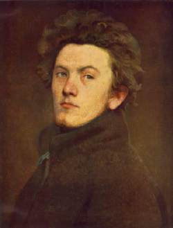 |
|
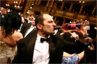 |
Opernball
- Ein
jeder Ungar ist
gespannt, wer sich da in einer
Stretchlimousine um die Ecke kutschieren
läßt
und man staunt oft, welch ein Celeb sich
einbildet, notwendiger Bestandteil der Veranstaltung zu sein, wie z.B.
der Herr am Bild links (klicke auf die Bilder). Der Opernball war bis 2009 ein Silvesterball
und ist nach einer fünfjähriger Pause ein Opernball nach
Wien Muster zur Faschingszeit im Februar geworden. |
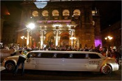 |
|
|
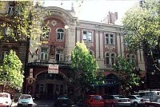 |
Einen
Katzensprung entfernt von der Oper in
Richtung Oktogon Platz, lediglich eine kurze Strassenecke entfernt von
der Oper befindet sich das
von
Budapest (Bild links). - Rechts neben dem
Operettenhaus steht das Moulin
Rouge. Beide
Unterhaltungsbetriebe bildeten ursprünglich einen Bordellbetrieb, den
größten Betriebskomplex
seiner Art in
Europa zu damaligen Zeiten, als dieser dem Bau
des Opernhauses um die Ecke herum am Andrássy út
Weg
weihen musste. Im neuen Gebäude entstand die
Musiksparte Operette. Die
Komponisten Emmerich Kalman (geb: Imre Koppstein) und Franz
Lehar waren die musikalischen Pioniere in diesem ehrwürdigen
Fachbetrieb. |
| 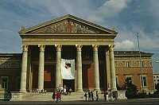 |
Den
kulturellen Bogen
spannt man dann am besten weiter,
indem man am herrlichen Andrássy Allee bis zum Heldenplatz
folgt, und dort auf der rechten Seite das
besucht,
das auf Ungarisch Műcsarnok (=Kunsthalle)
genannt wird. Der Eingang zu diesem musealen Kunsttempel steht
auf sechs Säulen. Dieses
Museum überzeugt kulturell genauso, wie
architektonisch
und zudem immer
aktuelle Sonderausstellungen bietet. |
|
Das
befindet sich direkt gegenüber
dem Museum der Bildenden Künste am Heldenplatz. - Einige
aus dem Museum - Die Sammlung
italienischer
Kunstwerke aus dem Mittelalter ist reichhaltig und besonders
wertvoll. So
trifft
man hier auf Werke von Giorgone, Bellotto, Bronzino (Venus, Amor und
die Eifersucht), Raffaello und
Tiziano, um nur die bekanntesten italienischen Maler zu nennen, die
hier vertreten sind. Die Briefmarke rechts soll besonders wertvoll
sein.
Man kann nur rätseln über die Ursache einiger Fehler
darauf. Ob
sie aus Unwissen oder aus Interesse an der Herstellung von wertvollen
Briefmarken eingeschlichen waren in einer Zeit, als Ungarn Devisen
brauchte und die ungarischen Briefmarken noch einen guten Ruf
für
wertvolle Investition hatten. Angelo statt Agnolo müsste auch
schon allen auffallen, die sich in der Kunstszene weniger auskennen. |
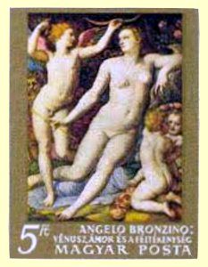 |
Die
Sammlung niederländischer Kunstwerke aus den 15. und 16.
Jahrhunderten ist so reichhaltig, dass man sie getrent
nach katholischen (heute belgisch) und protestanischen (heute
holländisch) Kunstwerken austellen kann. Das mag aber auch
nach unserer Einschätzung eher an
den
vorhandenen Räumlichkeiten im Museum am Heldenplatz liegen. Zu
den
berühmtesten Malern, die hier vertreten sind,
zählen Pieter Bruguel senior, Rubens, Van Dyck, Rembrandt,
Ruisdaelek u.a.
Ein Unicum ist hier die größte
Sammlung
spanischer Maler außerhalb von Spanien,
darunter berühmte Werke von El Greco,
Velázquez, Murillo
und Goya (Wasserträgerin).
|
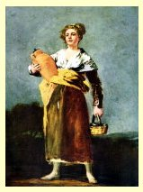 |
|
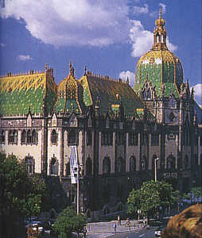 |
Historisch
interessant ist der prächtige
Jugendstilbau, indem sich das
befindet.
Es vermittelt einen tollen Überblick über die
handwerklichen Schätze der
Magyaren. Auch wenn die Homepage dieses Museums nur auf
Ungarisch
geschrieben ist, im Museum wird alles verständlich
für die Besucher aus dem Ausland. Umso weniger
verständlich
ist es vor dem Gebäude, wie man die schöne
Turmspitze, so
wie am Bild links abgelichtet worden ist, neulich durch eine
hässliche
Stahlkonstruktion erstzte. In der Presse wurde die Arbeitsvergabe an
ein bestimmtes Unternehmen mit Beziehung unterstellt. Warum ein
Stahlkrsett, wenn eine komplette Renovierung des
Gebäudekomplexes
bevorsteht, darüber sollte man nicht lange nachdenken. |
|
Unbedingt
einen Besuch
wert ist die phantastische
in
der mächtigen Burg am königlichen Burgberg. Die bedeutendsten Kunstwerke
Ungarns vom Mittelalter bis zur
Gegenwart
präsentieren sich dem Besucher in einem wahrhaft
königlichen Ambiente. |
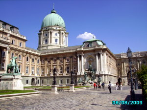 |
|
Eine Reihe
von besuchenswerten
Museen, die in dieser Gegend sehr nah zueinander liegen, sind meist
historisch relevante Ausstellungsstätten, die von der
Antike
bis zur Gegenwart interessante Objekte zeigen. Die wichtigsten sind:
Hier erfährt man interessante Fakten
über die Entstehung dieser Gegend im Nordwesten von Budapest.
Warum der Name der
Strasse "Herkules utca" mit einem "k" und der Namensgebende Hercules
Villa mit einem "c" geschrieben wird? Das könnten nur die
dafür
zuständigen Parteibonzen beantworten.
Der im Jahre 2010 gewählte neue Oberbürgermeister von
Budapest war früher in diesem
Stadtbezirk politisch aktiv und ist
heute
sogar in ganz Budapest zuständig
für die Benennung aller
öffentlichen Wege und Plätze.
|
|
|
 |
Wer den
lange in
Paris schaffenden Künstler Vasarely
nicht kennt, hat im Leben einiges
verpasst und sollte es schnell im
am
Szentlélek tér Platz am westlichen Fusse der
Árpád Brücke schnell nachholen. |
| Für
Liebhaber
sakraler Kunst ist die Sankt Stefans Basilika
ein Pflichtbesuch. Die
spricht für sich. Der
beeindruckende Kirchenbau versetzt nicht nur Gläubige in
ehrfürchtiges
Erstaunen. Für die Ungarn hat die Kathedrale eine noch viel
weiter reichende
Bedeutung, ruht doch hier die Reliquie der rechten Hand des Heiligen
Stefans,
des Staatsbegründers Ungarns. |
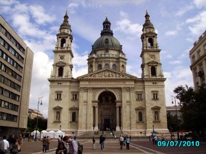 |
| |
Manch eine
berühmte
Person des öffentlichen Lebens fand hier ihre letzte
Ruhestätte. Am bekanntesten unter den hier beigesetzten sind
bei uns in Deutschland
die Fussballspieler Ferenc Puskás und Zoltán
Varga, der bis zum bisher größten, bekanngewordenen
Bundesligaskandal für die Berliner Hertha spielte.
Damals wurde Zoltán Varga ein lebenslang gesperrt
und als einziger nie begnadigt, obwohl er unter den Betroffenen am
wenigsten mit den Machenschaften von damals zu tun hatte. Es gab zwei
Gründe für seine hohe Strafe - die höchste
im Bundesligaskandal von 1971 überhaupt: Er verschwieg vor Gericht nichts
davon, wozu ihn seine spielverschiebende Mannschaftsleitung verpflichtete und er war ein
Ausländer in Deutschland. Um ihn kümmerte sich nicht
einmal sein Heimatland, das pseudokommunistische Ungarn, als
es im Rechtsstaat Deutschland vor Gericht darum ging, ein Jahr vor der
Weltmeisterschaft nicht die im Bundesligaskandal betroffenen, sondern
die deutschen
Nationalspieler für die WM zu begnadigen. Uli
Hoeneß, der damals für den
FC Bayern spielte, erinnerte sich neulich an die Ereignisse
von damals so: "Wenn ich die Wahrheit schreiben
würde, müssten wir nach Australien auswandern."
Ob weltliche oder sakrale
Kunst, Budapest ist eine
kulturelle Energiequelle, die sich unbedingt lohnt, erschlossen zu
werden. |
| |
|
| |
| |
|
Ungarn-Tourist Team

|
| |
| |
|